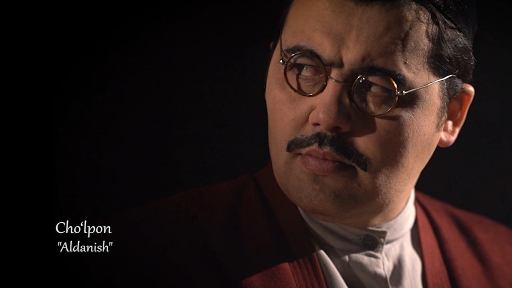
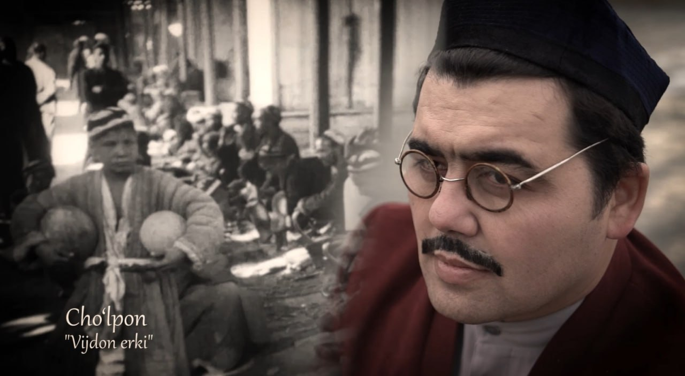
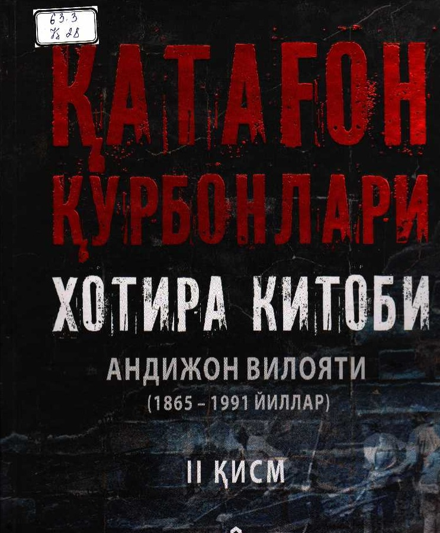
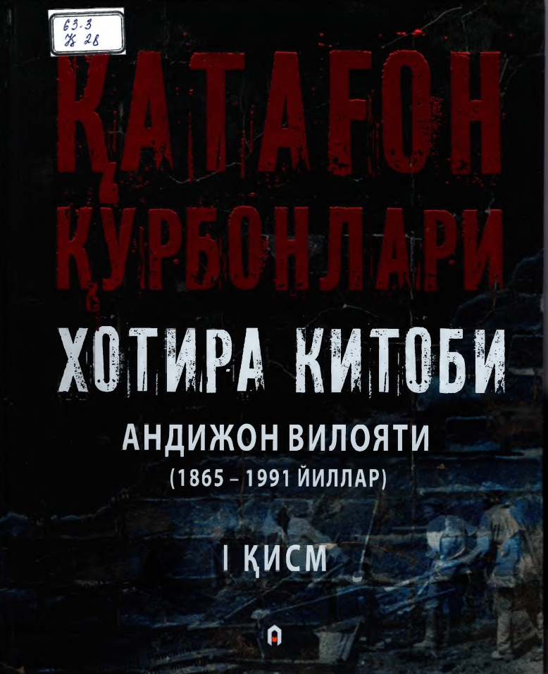
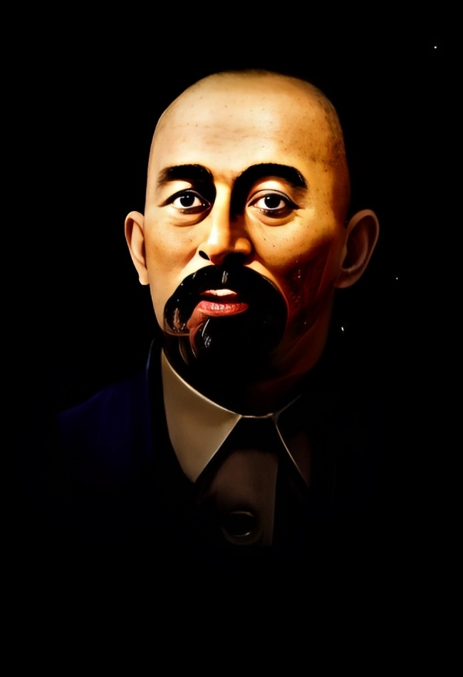

XX asr boshi o'zbek adabiyotida jadid ma'rifatparvarlik oqimi
O'zbek jadid adabiyotshunosligi faniga poydevor bo'lgan fundamental doktorlik tadqiqoti. Behbudiy, Fitrat, Cho'lpon merosining ilmiy tahlili berilgan.

Ular Germaniyada o'qigan edilar (Turkiston talabalari tarixi)
1920-yillarda Germaniyaga o'qishga yuborilgan 70 dan ortiq Turkistonlik talabalar taqdiri, ularning fojiasi va ilmiy faoliyatini yorituvchi tarixiy tadqiqot.

Jadidchilik harakati va ayollar masalasi
Jadidlarning ayollar ta'limi, oilaviy huquqlari va ijtimoiy maqomini yuksaltirishga qaratilgan qarashlari va amaliy faoliyati tahlili.

Jadid dramasi va teatri: genezisi va poetikasi
Turkiston professional teatrining vujudga kelishi, «Padarkush», «To'y», «Zaharli hayot» kabi sahna asarlarining badiiy xususiyatlari.

2023Abdurauf Fitratning falsafiy va ijtimoiy qarashlari genezisi
Fitrat asarlaridagi milliy mustaqillik, ma'rifatparvarlik va davlatchilik g'oyalarining falsafiy tahlili.
DSc dissertatsiyasi
2024Abdulla Avloniy pedagogik merosining zamonaviy ta'limdagi o'rni
Turkiy Guliston asaridagi axloqiy qadriyatlar va yangi usul maktablari darsliklarining tadqiqi.
PhD dissertatsiyasi